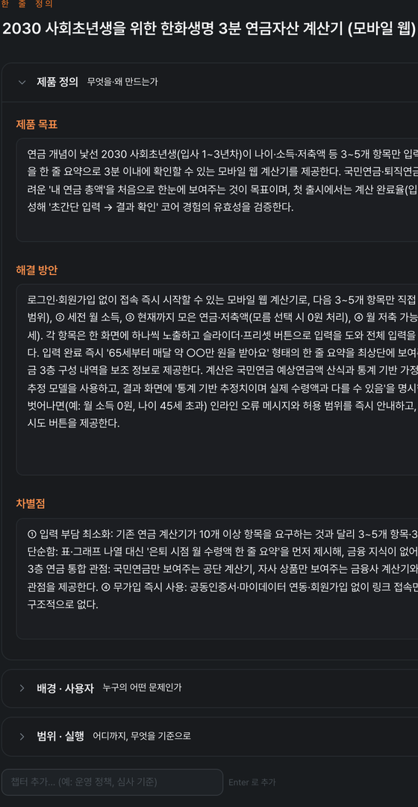
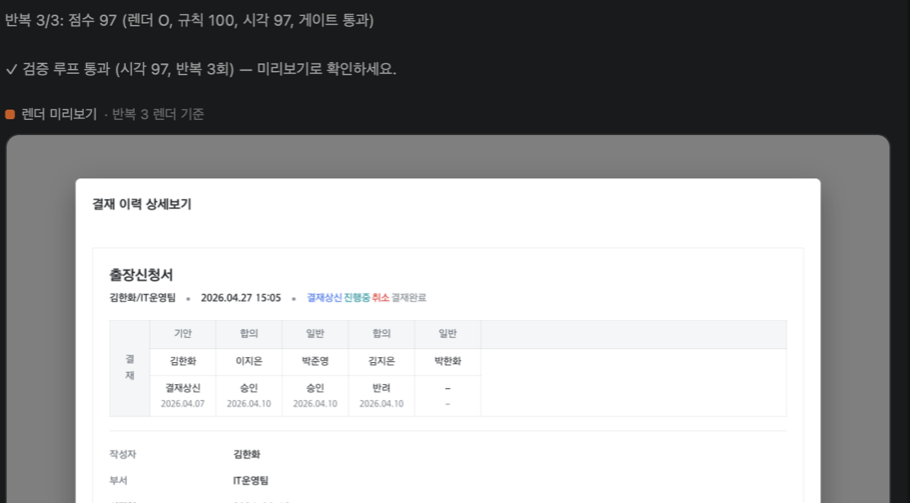
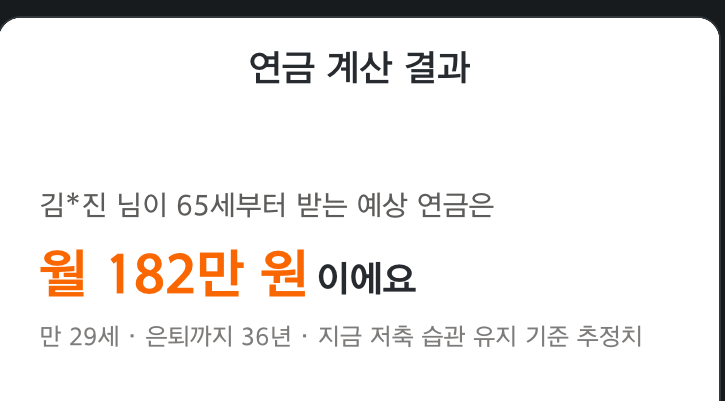

VSCode 확장 · 개발 완료
NEXTLAB Builder
쓰던 에디터 안에서 디자인 변환 · AI 코딩 · 표준 검사 · 커밋까지. 서버 구축 없이 확장 하나로 끝납니다.
- 대상 — 프론트엔드 개발자 · 수행사
- 핵심 — Figma → 한화 DS React 코드, 빌드·렌더 검증까지 자동
- 환경 — VSCode · Cursor · Antigravity, 같은 VSIX 하나
한화생명 · AI 개발도구 · NEXT LAB
NEXTLAB Builder 는 Figma 디자인을 한화 DS 코드로 바꾸는 VSCode 확장, NEXTLAB Studio 는 기획·디자인부터 코드까지 잇는 데스크톱 워크스페이스입니다. 어느 AI 를 골라도 한화생명 개발표준이 자동으로 주입됩니다.
VSCode 확장 · 개발 완료
쓰던 에디터 안에서 디자인 변환 · AI 코딩 · 표준 검사 · 커밋까지. 서버 구축 없이 확장 하나로 끝납니다.
데스크톱 앱 · 개발 완료
아이디어 → 기획 → 화면 흐름 → 실물 UI → 프로토타입을 한 흐름으로 잇고, Figma to Code 까지 품은 워크스페이스입니다.
앞 단계 산출물이 뒷 단계 입력
STEP 1
Talk to Spec객관식 질문지로 PRD·기능명세 도출STEP 2
User Flow정상·예외 경로를 자동 배치STEP 3
Talk to Design사내 디자인 킷으로 실물 화면 렌더STEP 4
Prototype테스트 케이스별로 직접 클릭해 검증

